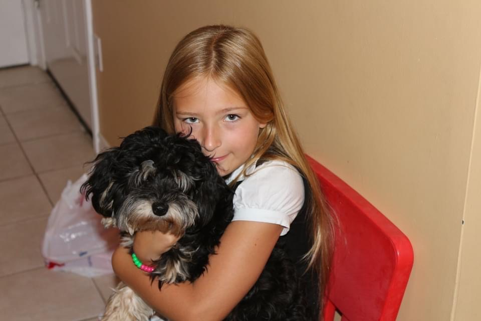
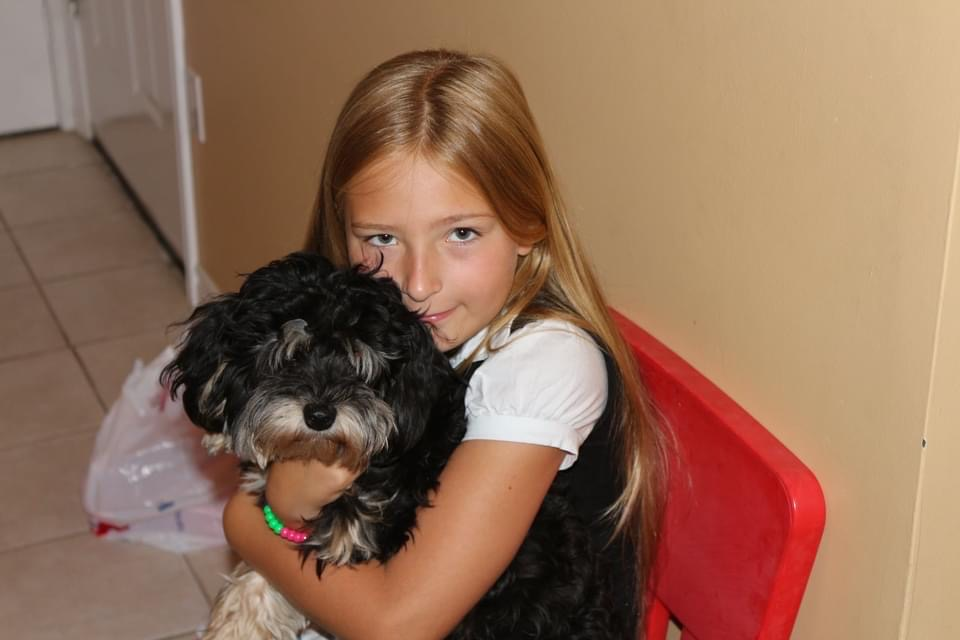
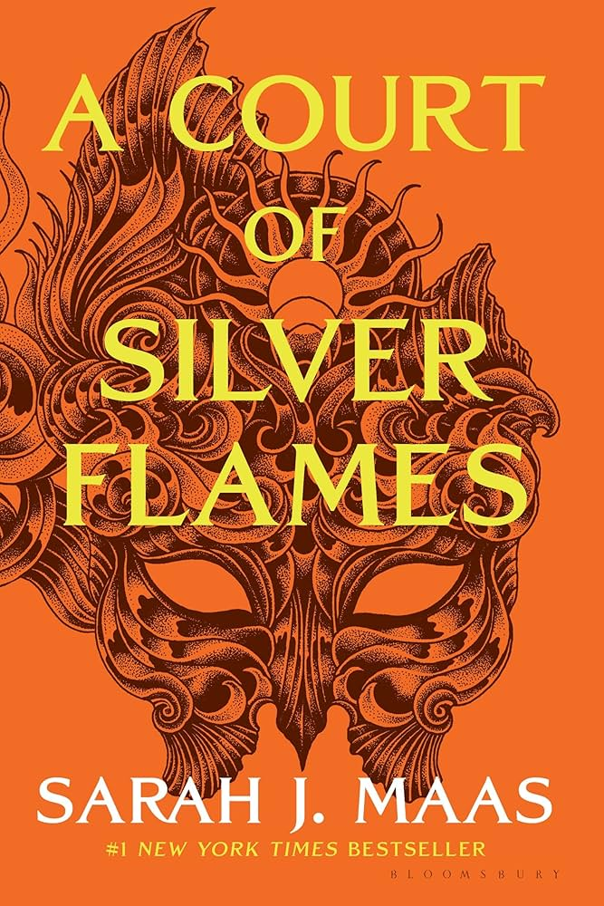
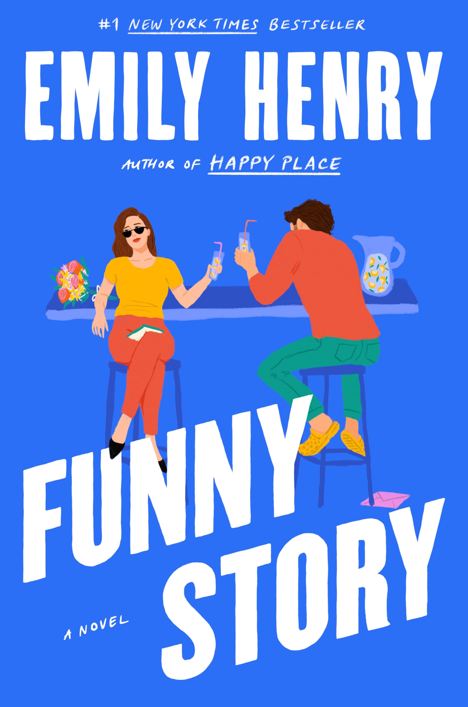
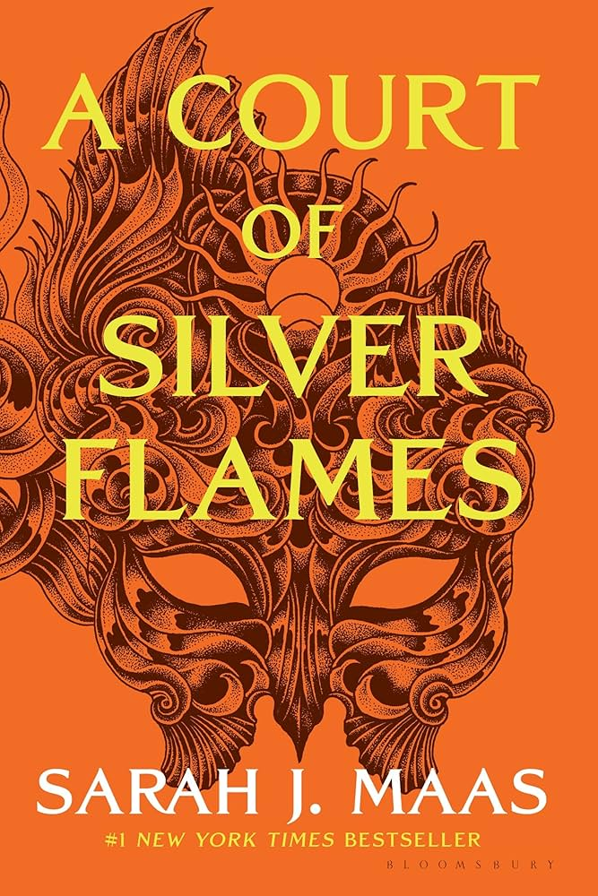
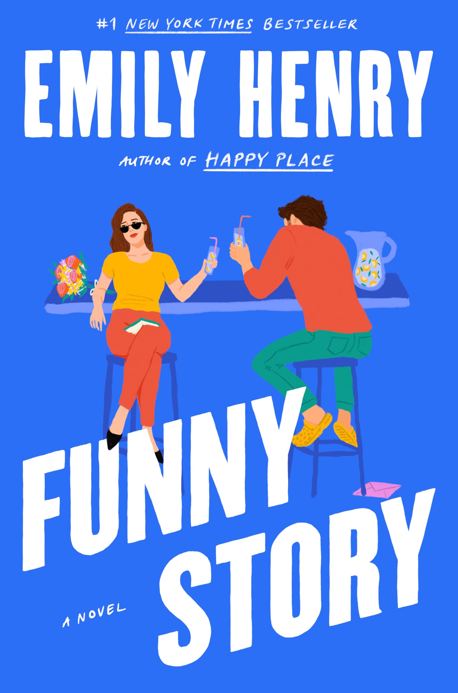

WELCOME
About Me
HELLO, My name is Mia Krzysztalowicz! I am a second-year student at the University of Waterloo studying global business and digital arts. By my last name, you can probably guess that I am Polish, though I can understand a lot more than I can speak. I grew up in Burlington, but my parents just recently moved to Wawa to run their own motel business. So, I am here alone navigating Kitchener/Waterloo alone while commuting to Stratford since that is where my program is based. I love to spend time with my friends when I am not completing schoolwork or working at Urban Behavior on the weekends. I played soccer for 7 years of my life but had an unfortunate falling out with the sport. I am working on fixing that relationship by joining soccer intramurals through the university. I also enjoy reading, listening to music, and adore a variety of artistic hobbies! Let's take a look and explore!
 



 


